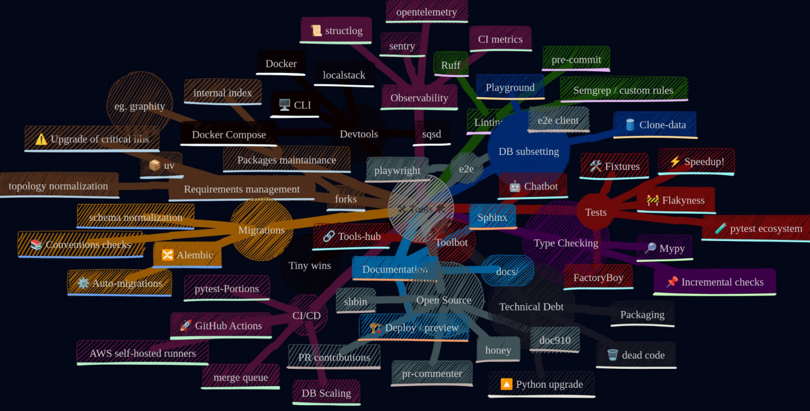
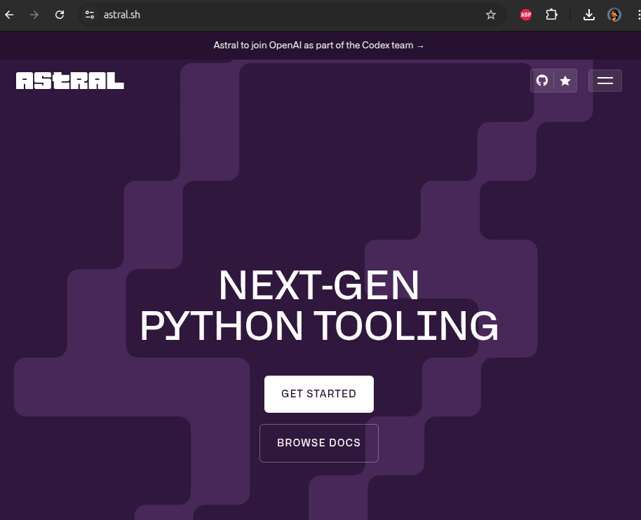
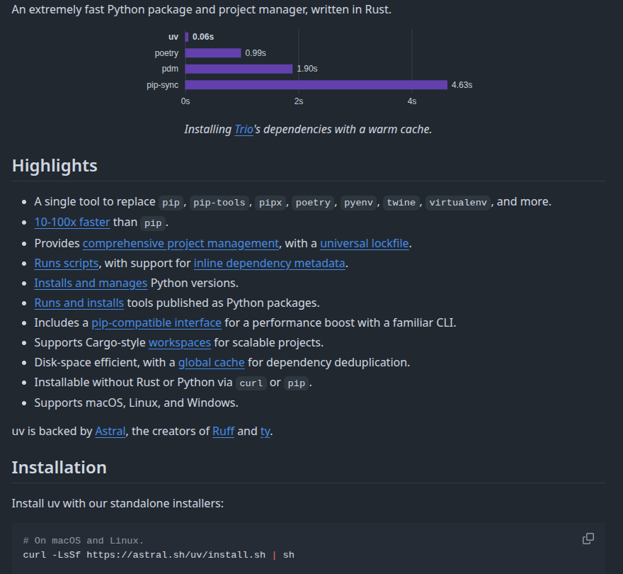
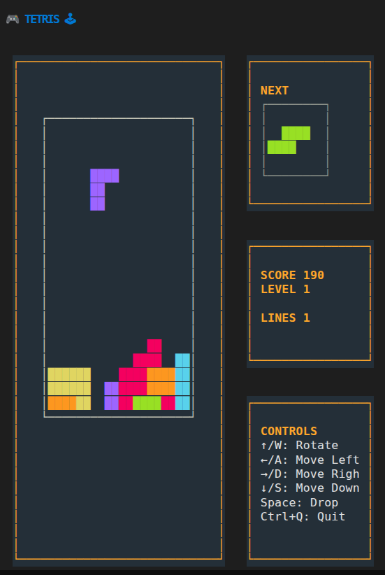
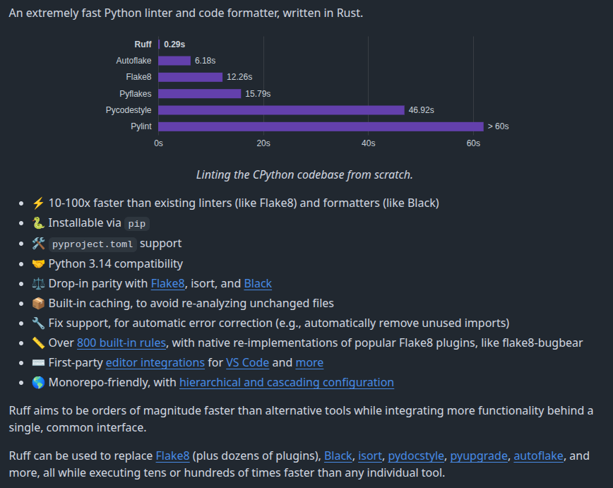
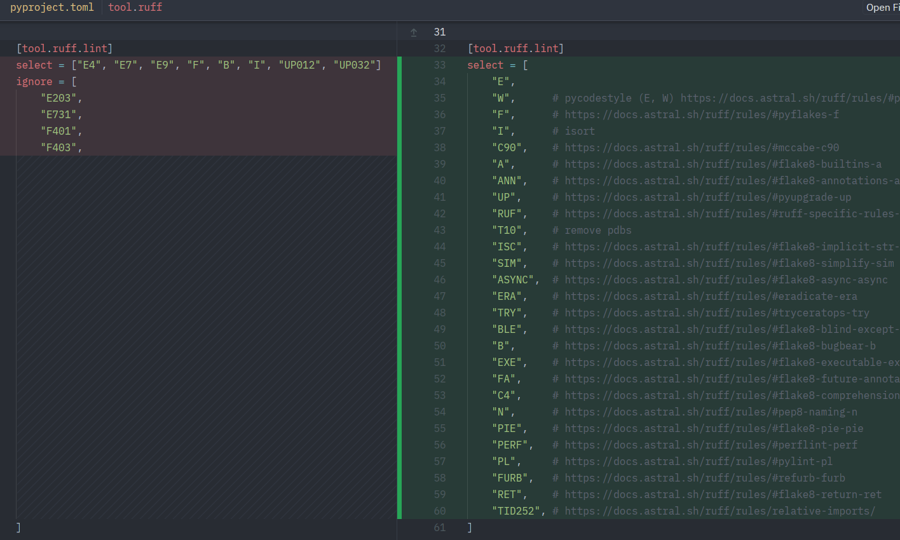
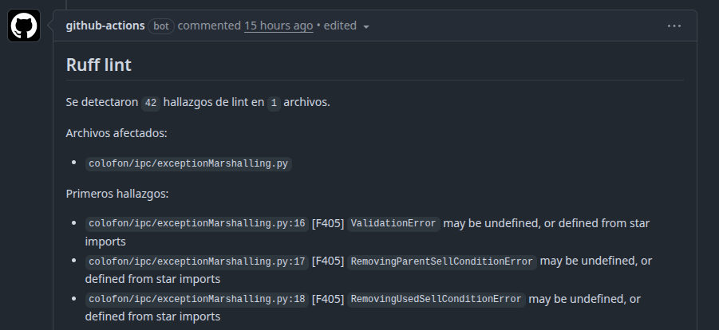

Tooling moderno para Python

Martín Gaitán @
DevEx (DX): Experiencia del desarrollo de software
«Herramientas y procesos para hacer el trabajo de quienes crean software más fácil y productivo»
¿Y quienes crean software?
Tod@s nosotres! Devs, PM, soporte, infra y agentes.
Pd: Developer Development Experience
Momento «yo»
{kind=link}

Tools + docs (+ agentes), FTW!
El tooling de Python no era pythonico
setup.pymisteriosos (setuptoolsy más viejos)Dependencias inseguras y lentas (
pipy más viejos)Aislacion de entornos complejo (
virtualenv)Linting/formatters dispersos y lentos (
flake8, + plugins)Test framework feísimo (
unittest)Tipado estático complejo y lento (
mypy)
Un lenguaje expcecional como python merece mejores herramientas
Pero un día llegó el doctor…
…manejando un cuatrimotor (oxidado)
{kind=link}

¿y saben lo que pasó?
Pieza 1: uv
{kind=link}

uv’s mini cheatsheet
uv add # resuelve y agrega depedencias al proyecto
uv run <comando> # ejecuta un comando provisto en el proyecto (o dependencia)
uv run script.py # ejecuta el script
uv run -p 3.13 ... # version de Python especifica
uv tool install <tool> # descarga y deja la tool disponible
uv python install 3.15 # descarga e instala Python estático en cualquier OS
uv build --wheel # produce el ".whl" del paquete
uv pip install ... # "pip compatible" (buuuh!)
uvx: shortcut para instalar en venv y ejecutar
Eg. uvx textual-tetris
{kind=link}

Estándares modernos
Todo en
pyproject.tomlen vez desetup.py + setup.cfg + Manifest + ...
PEP723
uv run script.py
# /// script
# requires-python = ">=3.12"
# dependencies = [
# "requests<3",
# "rich",
# ]
# ///
import requests
from rich.pretty import pprint
resp = requests.get("https://peps.python.org/api/peps.json")
data = resp.json()
pprint([(k, v["title"]) for k, v in data.items()][:10])
Locking de dependencias
Eg. greenlet>=3.0.
Sale 4.0 y 💣!
«En mi compu funciona»
Ahora uv.lock es la fuente de verdad.
Pieza 2: Ruff
{kind=link}

¿Cómo dice?
uv run ruff check <path/to/file(s)>
uv run ruff format <path/to/file(s)>
uv no ejecuta codigo, lo analiza estáticamente
¿Reglas? ¡Somos Fierro y usamos facón!
Las clasicas de flake8 y pyflake
Bandit (seguridad)
Bugbear: patrones que ocultan bugs
DTZ: errores en manejo de fechas
Simplify: reescribir lo mismo más «pythonico»
Isort/TDI: imports
PERF: mejoras en performance
UP/FURB: modernizar código
Pep8-naming: la parte PEP8 que no respetamos 🥺
decenas más
¿Aguantarse la pelusa? ¿cuánta?
Hoy?
$ uv run ruff check .
....
Found 6316 errors.
[*] 2035 fixable with the `--fix` option (585 hidden fixes can be enabled with the `--unsafe-fixes` option).
$ uv run ruff format --check .
...
1185 files would be reformatted, 468 files already formatted
Con las reglas que suelo usar
{kind=link}

Found 174027 errors.
[*] 10636 fixable with the `--fix` option (31229 hidden fixes can be enabled with the `--unsafe-fixes` option).
Autofixes
--fix: 100% confiable. Pero hacer PRs adhoc para no meter ruido.--fix --unsafe-fixes: confiables, pero leer la doc de la regla por corner cases y revisar con calma.«ejecutá ruff en los archivos modificados del branch y corregí los errores»
Tip: integrá ruff en tu editor (highlight de error + autofix en el save)
Adopción incremental
{kind=link}
